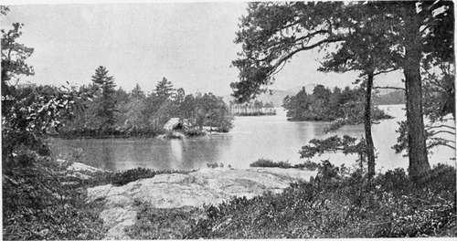

The Lake Trout. Part 8
Description
This section is from the book "American Game Fishes", by W. A. Perry. Also available from Amazon: American Game Fishes: Their Habits, Habitat, and Peculiarities; How, When, and Where to Angle for Them.
The Lake Trout. Part 8
The characteristics of the Mackinac Trout were fully shown during this outing at Stannard's Rock. Not a single fish broke water after being struck, nor did we see them at all until just as they were being brought to gaff. They showed no tricky ways, and only ordinary caution was necessary in boating them. But they were very active in the water; again and again as one fish was being reeled in, he would be followed by others, apparently out of wanton curiosity, who would come close to the boat, and then, with a saucy flirt of the tail, turn away, only, perhaps, themselves made captive, to be followed in turn a minute later by their still untram-meled brethren.
Lake Gogebic furnished wonderful fishing when its waters were still new to the angler-so did the Eagle Waters-so have many other newly opened-up lakes and streams which now have lost their pristine glory; but here is an apparently inexhaustible source of fish sport, if only commerce, with its insatiable greed, does not deplete it. It is so far removed from land, and the fishing is attended with so much of uncertainty and danger on account of the elements, that it must be always an open question whether the sportsman-angler will meet with the fulfilment of his plans. We were exceptionally fortunate; the weather could not have been better if it had been "made to order;" even a few days earlier or later, in our own case, and rough weather would have made it necessary for us to forego our pleasure.
Other yachting parties have visited this rock and carried away immense catches. A well-known Chicago club-man is said to have caught over 2,000 pounds of fish in one day's fishing over these grounds, and our captain of my first yachting trip herein mentioned caught over 1,000 pounds in a similar length of time. This seems very "hoggish." as one looks at the total, but in our own case the fish were given to the crew, and salted down by them for the market as soon as we reached Marquette, thereby furnishing a material addition to their wages. I presume the same was done in the other cases I have mentioned, thereby, I hope, removing these particular instances from the charge of being either mercenary or excessive.
I have heard and read many ufish stories"-some of which had "a very ancient and fish-like smell"-but the wildest of them could hardly outdo the reality that confronted us at this famous spot.
My pleasant task is well-nigh ended, my reader, yet I fain would add one parting word of most prosaic sort. The old adage hath it that the hare must first be caught before he's cooked. Our Trout are caught; how shall we serve them in toothsome form to the friends who gather to hear the story of their capture? The flesh of the Lake Trout is firm and hard, and has more or less of that "dryness," like the Brook Trout and the Salmon of the waters, and the quail on land, that makes it pall soon upon the appetite. It tastes very well at first-is rich and toothsome-but after a time even the most ardent advocate of "brain food" will admit that he would relish a change. Hence the importance of variety in the ways of serving this fish. Availing myself again of the kind permission of Mr. Cheney, I quote him, premising it by saying that, for myself, I never saw a fish spoiled by being delicately and carefully broiled, and served with plenty of sweet, butter-gravy.
"There may be a better way to cook Lake Trout, but I do not know it. A fish would have to be a leviathan that I would boil or bake, and as for broiling, I leave that for salt mackerel.
"Of course, when fishing I select the smaller fish to cook, as they are more easily and quickly cooked and the larger ones are better to send to one's friends-the happy fate of most of the Trout we take in Lake George.
"Clean, and split your Trout open on the back; if then too large for a frying-pan, divide again vertically; if still too large, cut into pieces four or five inches'wide; roll the halves or sections in Indian meal or cracker crumbs-some prefer to dip their fish in egg, white and yolk beaten together. Fry some clear fat pork in a frying pan over a hot fire, and when the fat is fried out, put in your fish, flesh side down; finish cooking with the skin side down. Cook quickly and serve hot, with pepper and salt. When the crust which frying makes is broken, you have [the delicious, white, moist meat, with all the richness which a fat Trout affords, making a dish fit for a hungry angler."
It is always pleasant to quote oneself against oneself, so I quote Mr. C. again, suggesting merely that this last recipe is the result of four or five years added experience:
"Occasionally there is caught in Lake George a Trout shorter and deeper than his fellows of equal weight, with real salmon-cclored flesh and with creamy curds between the flesh flakes. Such a fish has devoted his whole mind to his diet, and good living has changed his appearance; simply this and nothing more.
"One year I cut my fishing short to return home to an entertainment under the old roof-tree. I had scarcely got my traps into the house, when my grandmother told me that she must have a Salmon for the lunch the next day. I showed that it was impossible to telegraph to New York and get a Salmon at the hour it was required, and disappointment reigned. Among the fish that I had brought home was one of these specially fed Trout of io.\ pounds. I asked for the list of the expected guests, and when I had read it I announced that I had a Salmon that I had until that moment overlooked, and I advised that it be boiled and served cold, covered with mayonnaise and garnished with parsley, and placed before me to serve. Considering the occasion, I was only shaky about one of the men, for I knew he had eaten Salmon from the Columbia River to New Brunswick, and he might be critical even in a friend's house. The only one who ever spoke of that fish to me was that very man, and it was when we were at table together and actually eating Salmon, that he compared the real with the bogus, and the bogus won by a throat-latch."
Where The Trout Thrive.
Continue to: